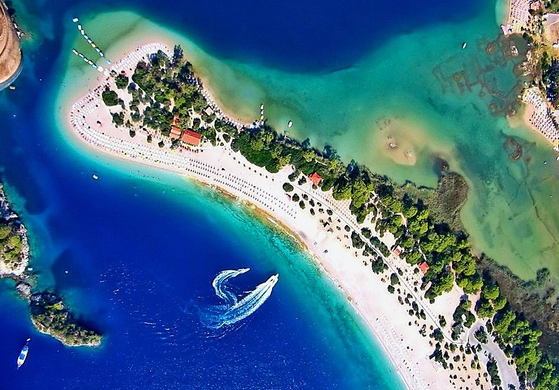
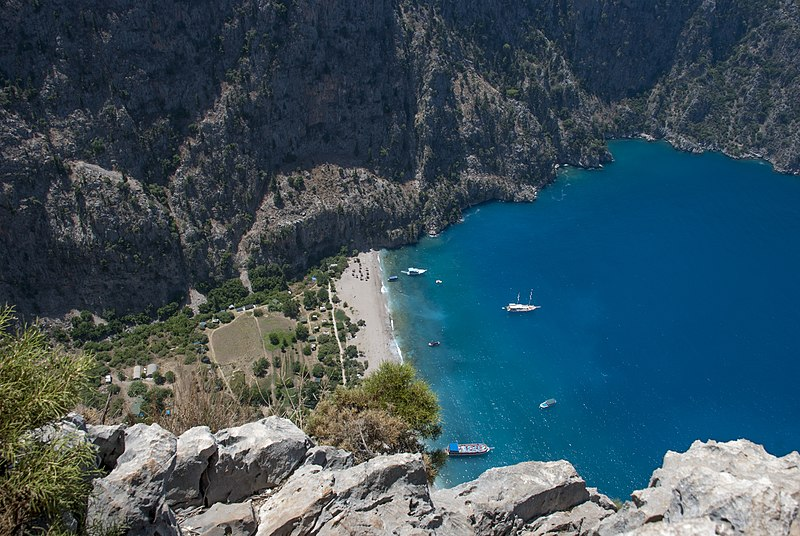
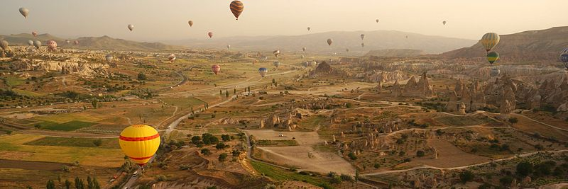
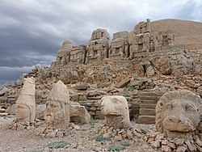
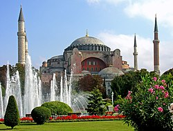

Tourism in Turkey is focused largely on a variety of historical sites, and on seaside resorts along its Aegean and Mediterranean Sea coasts. Turkey has also become a popular destination for culture, spa, and health care. At its height in 2019, Turkey attracted around 51 million foreign tourists,[1] ranking as the sixth-most-popular tourist destination in the world.[2] The total number fluctuated between around 41 million in 2015, and around 30 million in 2016.[3][4] However, recovery began in 2017, with the number of foreign visitors increasing to 37.9 million, and in 2018 to 46.1 million visitors[5][6][7]
Istanbul is one of the most important tourism spots not only in Turkey but also in the world. There are thousands of hotels and other tourist-oriented industries in the city. Turkey's largest city, Istanbul has a number of major attractions derived from its historical status as capital of the Byzantine and Ottoman Empires. These include the Sultan Ahmed Mosque (the "Blue Mosque"), the Hagia Sophia, the Topkapı Palace, the Basilica Cistern, the Dolmabahçe Palace, the Galata Tower, the Grand Bazaar, the Spice Bazaar, and the Pera Palace Hotel. Istanbul has also recently become one of the biggest shopping centers of the European region by hosting malls and shopping centers, such as Metrocity, Akmerkez and Cevahir Mall, which is the biggest mall in Europe and seventh largest shopping center in the world. Other attractions include sporting events, museums, and cultural events. In January 2013, the Turkish government announced that it would build the world's largest airport in Istanbul. The operation has an invested 7-billion euros and was planned to have the first part of a four-part plan completed by 2017.[8] As a consequence of the continuous fall in tourism to Turkey in recent years, as of October 2016 in Istanbul's famous bazaar once crowded shopping streets are not as crowded as before, "the streams of tourists who used to visit the market each day have trickled to a halt."[3] The number of foreign tourists visiting Istanbul declined to 9.2 million in 2016, a 26 percent decrease compared to 2015.[9]
Ankara : [ˈaŋkaɾa] (About this soundlisten)),[a] historically known as Ancyra[b] and Angora,[8][c] is the capital of Turkey. Located in the central part of Anatolia, the city has a population of 4.5 million in its urban center and over 5.6 million in Ankara Province,[10] making it Turkey's second-largest city after Istanbul. Serving as the capital of the ancient Celtic state of Galatia (280–64 BC), and later of the Roman province with the same name (25 BC–7th century), the city is very old with various Hattian, Hittite, Lydian, Phrygian, Galatian, Greek, Persian, Roman, Byzantine, and Ottoman archeological sites. The Ottomans made the city the capital first of the Anatolia Eyalet (1393–late 15th century), and then the Angora Vilayet (1867–1922). The historical center of Ankara is a rocky hill rising 150 m (500 ft) over the left bank of the Ankara River, a tributary of the Sakarya River. The hill remains crowned by the ruins of Ankara Castle. Although few of its outworks have survived, there are well-preserved examples of Roman and Ottoman architecture throughout the city, the most remarkable being the 20 BC Temple of Augustus and Rome that boasts the Monumentum Ancyranum, the inscription recording the Res Gestae Divi Augusti.[11] On 23 April 1920, the Grand National Assembly of Turkey was established in Ankara, which became the headquarters of the Turkish National Movement during the Turkish War of Independence. Ankara became the new Turkish capital upon the establishment of the Republic on 29 October 1923, succeeding in this role the former Turkish capital Istanbul following the fall of the Ottoman Empire. The government is a prominent employer, but Ankara is also an important commercial and industrial city, located at the center of Turkey's road and railway networks. The city gave its name to the Angora wool shorn from Angora rabbits, the long-haired Angora goat (the source of mohair), and the Angora cat. The area is also known for its pears, honey and muscat grapes. Although situated in one of the driest regions of Turkey and surrounded mostly by steppe vegetation (except for the forested areas on the southern periphery), Ankara can be considered a green city in terms of green areas per inhabitant, at 72 square meters (775 square feet) per head.[12]
| name | photo |
|---|---|
| Ölüdeniz beach |  |
| Butterfly Valley, Fethiye |  |
| Cappadocia is a region created by the erosion of soft volcanic stone by the wind and rain for centuries.[12] The area is a popular tourist destination, having many sites with unique geological, historic, and cultural features. |  |
| Statues of Mount Nemrut in Eastern Turkey |  |
| Hagia Sophia in Istanbul attracts around 3 million tourists each year. |  |